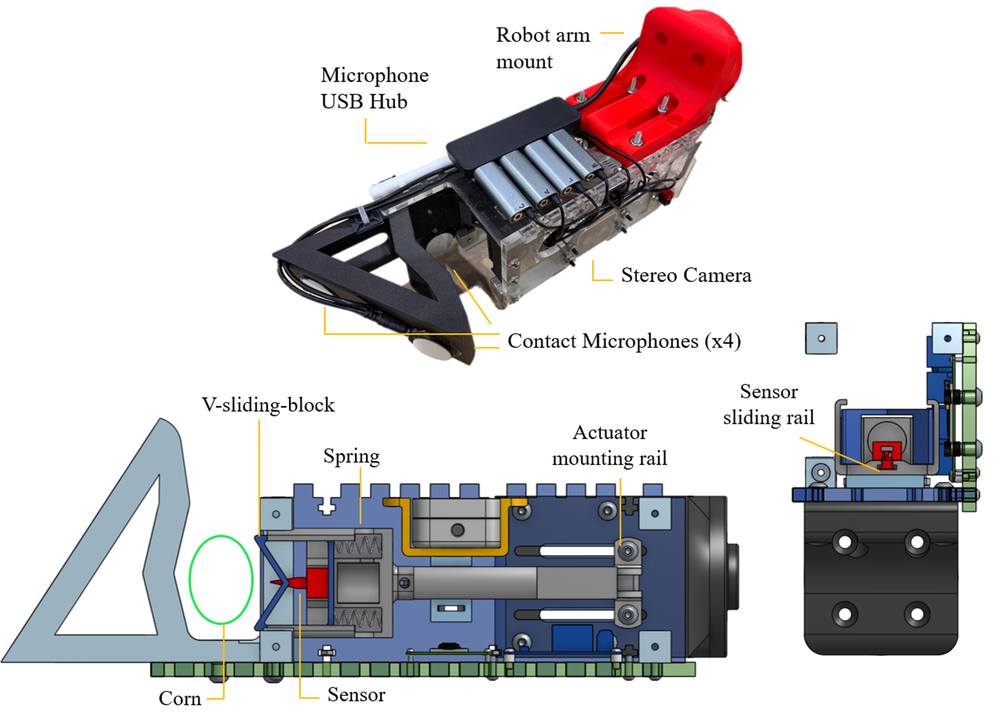
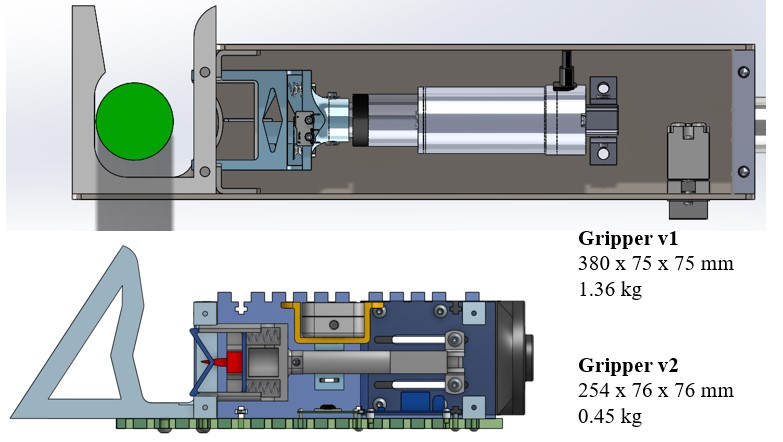
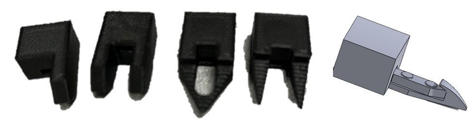
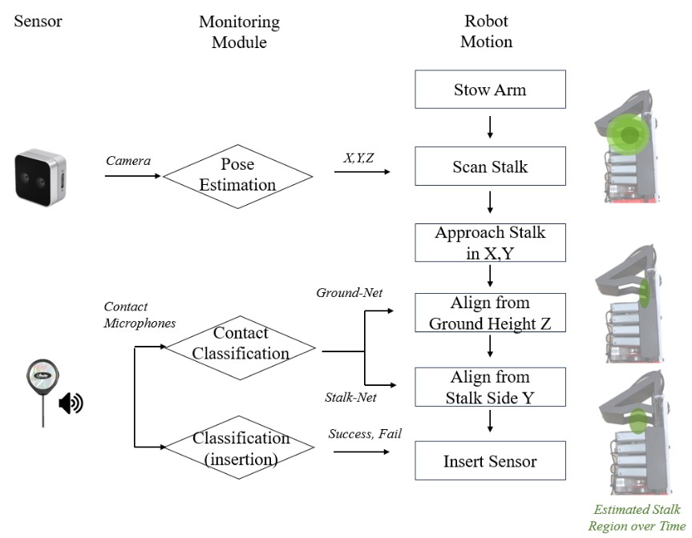

Design Specification
In the field, we observed significant variation of corn stalk thickness.
Even in the same farm, corn stalks can have different dimensions due to corn types, plant date, growth phase, and nutrient variation.
According to collaborating agronomist from Iowa State, monitoring nitrate concentration from V3 to V8 stages of corn stages is ideal.
These stages correspond to variation of stalk thickness in diameter of approximately 12mm to 45mm.
Inserting sensors is a precise manipulation task considering that the nitrate sensor is a tiny sensor of only 10mm (where 2 mm error could mean incorrect reading).
However, the varying stalk diameter, as well as the cluttered leaves in the environment, provide uncertainity that could lead to unsuccessful insertions.
In order to still reliably insert these sensors in varying conditions, we utilized clever mechanical designs into the gripper to handle these uncertainity.
In addition, we aimed to design the gripper to be self-contained and compact, so that all sensors and electronics would be housed inside the gripper.

Gripper Design Walk Through
We created a custom end-effector that can detect a corn stalk and actuate a sensor into the stalk.
The overarching design goal behind the gripper was (1) to be simple and compact (2) mechanically induce the alignment of sensor and corn stalk.
The main components used to in the gripper were Intel D405 stereo camera, 2" stroke linear actuator, spring-loaded V-sliding-block, and a rigid funnel piece.
All these components were fit into a compact gripper dimension of 254mm x 76 mm x 76 mm (L x W x H). The gripper is simple because it uses only a single actuator for the insertion.
Based on preliminary testing, we determined the force required to penerate young corn stalks (near V3 stages) with nitrate sensors was approximately 40N.
We determined this by mounting the sensor on a Force/Torque sensor and measuring the peak force of multiple insertions. Considering the potential variation of stalk thickenss,
and that a full penetration of the sensor does not damage the stalk, we selected a 90N linear actuator with a 50mm stroke to cover majority of the stalk thickness we would encounter.
In some cases where the stalk is very thin, the full stroke does not provide sufficient travel for deep insertion. In these cases, we can easily adjust the mount of the actuator on the sliding rail.

Regarding the insertion mechanism, we utilize a compliant V-shaped funnel design to slide to stalk into center alignment with the sensor.
On the back side of the corn stalk, there is a rigid funnel piece that holds the stalk in place. On the front side of the corn stalk,
there is a V-sliding-block that first comes in contact. This V-sliding-block also aligns the stalk but is spring-loaded so that with enough contact with the stalk,
the block slides back and only the rigid sensor takes on full force of the insertion. This compliance through the spring-loaded block was critical because
if the rigid point of the sensor was the first point of contact with the stalk, the stalk would often be poked off-centered, leading to failed insertions.
CAD file for the gripper can be found here
The gripper has gone through a major design iteration to reduce the weight and length of the gripper from a previous year design. From the end-effector controller's perspective,
a long and heavy cantilevered gripper reduced feasible workspaces for the xArm robot.

Sensor Deployment
The nitrate sensor has a custom membrane which can wear and tear due to the abrasion that occurs during insertion.
To prevent sensor damage, we created a sensor sleeve design that can offload the force during penetration away from the sensor, as well as not easily falling out of the stalk.
We tried couple design variations and determined that an arrowhead shaped sleeve works best. The arrowhead protects the sensor during insertion because it
covers the sensitive sensor pads, while also gripping inside the stalk from the sides of the arrow.

In terms of deploying the sensor, the sensors are on a T-slot rail which restricts the sensor motion in linear motion in one axis.
During the actuator extension process, the backend of the T-rail holds the sensor in place.
During the actuator retraction process, the arrowhead grips to the stalk, providing force to pull the sensor out from the T-slot rail.
Once the sensor is deployed, new sensor can be reloaded manually into the empty T-rail slot.
Vibrotactile Sensors
The operating environment has high clutter with leaves. When operating closeup and near clutter, the camera may not be able to detect collision or reason about how well the insertion has been made.
As such, we are exploring how vibrotactile signals could help as new sensing modality to provide sensor updates in a close-loop form of the manipulation sequence.

Insights on Gripper Design
(1) The funnel design of the V-sliding-block works on compliant stalks but not rigid stalks.
The design assumption was that when an off-centered stalk makes contact with the funnel of the V-sliding-block, it would slide into the center of the funnel, and align to the sensor.
We observed this sliding behavior was generally true for stalks when inserting the sensor at heights around 10" or above, where stalk at that height would be more compliant and bend.
However, we observed there was little sliding into the funnel when inserting the sensor close to the ground (below 3"). where stalk at the height would be rigid as it's rooted close to the ground.
(2) Gripper C Clamp was 3D printed to be lightweight but was not strong enough to withstand the force of the actuator pressing into it.
The C Clamp part was meant to be a rigid part that holds the stalk steady as the actuator is jamming the sensor into the stalk.
However, the C Clamp at times deformed and at one point even broke after repeated use.
For future design iteration, the parts that receive force should be supplmented with stronger material.
(3) Thickness of the stalk and sensor can exceed the funnel entrance width, and therefore the sensors gets knocked out when the gripper is pulling out around the stalk.